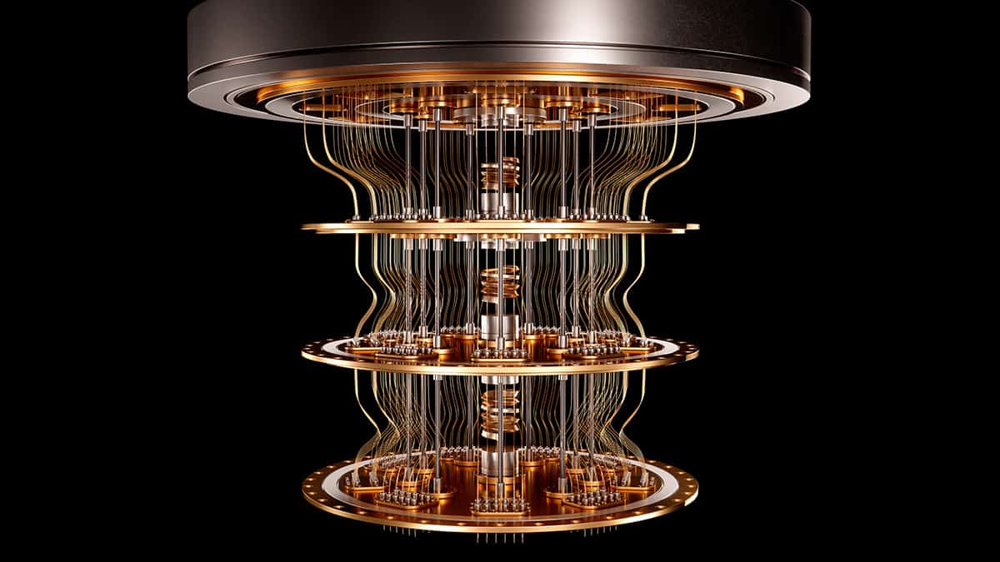

Quantum Computing: Principles, Technologies, and Future Prospects
Basic principles of quantum computers
A quantum computer is a computing system that utilizes the principles of quantum mechanics to solve complex problems much faster than classical computers. Unlike classical computers, quantum computers take advantage of quantum mechanical phenomena called superposition and entanglement.
Qubit
The basic unit of information in a quantum computer is the qubit. Whereas classical computers use bits, which can only have two states, 0 or 1, qubits can have superposition states, where both 0 and 1 exist simultaneously. This property gives quantum computers the ability to perform multiple calculations simultaneously.
Quantum superposition
Superposition is a phenomenon in quantum mechanics where a particle can exist in multiple states at the same time. In quantum computing, qubits can exist in superposed states of 0 and 1, allowing them to perform multiple calculations simultaneously. This gives quantum computers their inherent parallelism and allows them to process millions of operations simultaneously.
Quantum entanglement
Entanglement is a phenomenon in which two or more particles are so closely connected that the state of one particle has an immediate effect on the state of the other, no matter how far apart they are. This allows quantum computers to solve complex problems faster.
Applications of quantum computers
Quantum computers are expected to revolutionize many different fields:
- Optimization problems - solving problems with complex variables, such as supply chains, traffic flow, etc.
- Cryptography - cracking current cryptographic schemes and developing new, more secure encryption methods
- Drug discovery - accelerating drug discovery through molecular simulations
- Artificial intelligence - improving the learning speed and accuracy of machine learning algorithms
- Materials science - designing and discovering new materials
Quantum computing is still in its infancy, and many technical barriers need to be overcome before it can be commercialized. In particular, the instability (loss) of quantum states and error correction remain major challenges.
Understand the latest trends and principles of qubit implementation technology
Mathematical representation of qubits and how they work in detail
Qubits in quantum computers are represented through linear algebra. Quantum mechanics uses Dirac’s Bracket notation to define a qubit as follows:
1 | |Ψ⟩ = [ψ₁, ψ₂]ᵀ (ψ₁² + ψ₂² = 1) |
where |0⟩ = [1, 0]ᵀ, |1⟩ = [0, 1]ᵀ, and the nested state is represented as a linear combination of these two states. For example, a nested state with a 50:50 probability would look like this:
1 | |ψ⟩ = 1/√2 |0⟩ + 1/√2 |1⟩. |
This representation allows us to visualize what state a qubit is in on a three-dimensional Bloch sphere.
Comparing the main qubit implementation technologies
The main qubit implementation technologies currently being researched are:
Superconducting qubits (Superconducting Qubits)
- Pros: High speed, scalable by utilizing existing semiconductor industry technologies
- Cons: Short state retention time and need to be kept at cryogenic temperatures near absolute zero
- Companies using: Google, IBM, Quantum Circuits
Trapped Ion Qubits (Trapped Ion Qubits)
- Advantages: High stability and accuracy, low error rate and long qubit state retention time
- Cons: Relatively slow processing speed, requires complex laser system
- Companies using: IonQ, Honeywell
Diamond nitrogen-vacancy center (NV Center)
- Pros: Can operate at room temperature, cost-effective
- Cons: Difficult to connect more than three qubits, limiting scalability
- Companies using: Quantum Diamond Technologies
Photonic qubits (Photonic Qubits)
- Features: Useful for transmitting quantum information over long distances using the oriented spin state of light particles
- Uses: Currently used primarily for quantum communication and encryption
Neutral Atom Qubits (Neutral Atom Qubits)
- Features: Use light to trap and control atoms and can operate at room temperature
Deeper Understanding of Quantum Superposition
To help us understand the concept of quantum superposition, let’s look at the double-slit experiment of electrons. In this experiment, when electrons are randomly shot one by one through a double slit, the following amazing phenomenon occurs:
- Without observation: wave-like interference patterns form on the screen.
- When observed: the interference pattern disappears and only two lines form.
This means that a single electron is actually passing through two slits simultaneously, showing that the very act of observation affects the quantum state. This phenomenon is also explained by Schrödinger’s cat thought experiment, where the idea is that the cat exists in a superposition of ‘alive’ and ‘dead’ states until it is observed.
EPR paradox and Bell’s inequality in quantum entanglement
The bizarre nature of quantum entanglement was questioned through a paradox posed by Einstein, Podolsky, and Rosen (EPR) in 1935. They claimed that quantum mechanics was incomplete, but experiments with the ‘Bell inequality’ proposed by John Bell in 1964 proved its reality.
In 2022, the Nobel Prize in Physics was awarded to Professors Alain Aspe, John Clauser, and Anton Childinger for their experimental proof of quantum entanglement. Their experiments showed that quantum entanglement does exist, and that it makes quantum computing and quantum information technology possible.
Current challenges and future prospects for quantum computers
One of the main challenges for quantum computers is ‘decoherence’, which is the loss of quantum states in qubits. Environmental factors can cause the superposition states of qubits to collapse, and techniques are needed to prevent this from happening.
For the future development of quantum computers, the following points are important:
- Long coherence times: developing techniques that allow qubits to maintain their quantum state for longer.
- Effective inter-qubit communication: Creating systems that allow qubits to efficiently exchange information with each other
- Isolation from the environment: advancing technologies to protect qubits from the effects of their surroundings
- Affordable and scalable technology: Developing cost-effective and scalable implementations of qubits for commercialization.
If these challenges are met, quantum computers are expected to revolutionize a wide range of industries, including market forecasting in financial services, improving manufacturing operations, and developing new drugs.